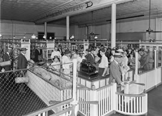
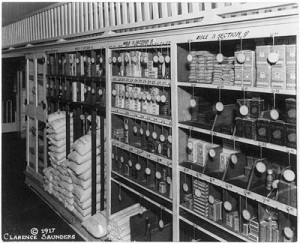

Il primo supermercato
In un sistema produttivo snello, cioè basato sui principi della Lean Production, viene chiamata supermarket quell’area dove sono posizionati i materiali gestiti a kanban.
Il concetto di supermarket a kanban trae origine dal primo negozio self service della storia, Piggly Wiggly, sorto a Memphis nel Tennessee nel 1916. L’idea innovativa stava nel fatto che il cliente si potesse servire direttamente dallo scaffale, senza altri intermediari, innescando automaticamente il ripristino della merce effettivamente consumata sulla base del semplice svuotamento dei ripiani.
Tali supermarket, in modo del tutto involontario, diedero ispirazione alla direzione di Toyota Motor Company che nei primi anni ’50 si trovava in visita negli Stati Uniti per trarre ispirazione dai propri competitor nel settore automobilistico, Ford e General Motors.

In Toyota tale concetto è stato applicato alla produzione. Nei magazzini a supermarket:
- tutti i componenti sono a disposizione per il prelievo in un certo numero di contenitori precedentemente dimensionato
- a ciascun contenitore è associato un cartellino, il kanban
- l’effettivo svuotamento del contenitore, tramite il cartellino kanban, autorizza il ripristino di quel materiale
Il supermarket gestito a kanban è di conseguenza uno strumento per limitare la sovrapproduzione, lo spreco più importante, in quanto autorizza il ripristino solo di ciò che è stato fisicamente consumato.